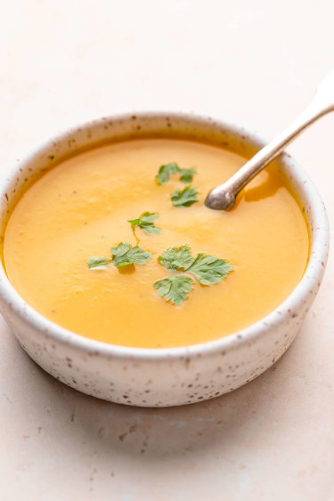

Soupy Soup

Description
Soupy Soup has been described by many world-class chefs as perfection in consumable liquid form.
The recipe for this soup had previously been lost for over 7 centuries, but it was recently found in an archaeological dig in Soupland.
Ingredients
- 1 L of Water
- 2 Mushrooms
- 1 Apple
- 100 mL of Food Coloring (of the color of your choice)
Steps
- Add the ingredients to an appropriately-sized pot.
- Stare into the pot and reflect on your life.
- Fight off the goblin that just crashed through your kitchen window.
- Bike to your nearest grocery store and buy a can of Soupy Soup.
- Enjoy!